In hierdie hoofstuk gaan jy leer wat Tegnologie
behels. Jy sal leer oor natuurlike en mensgemaakte
materiale, oor gereedskap-, en oor die ontwerpproses.
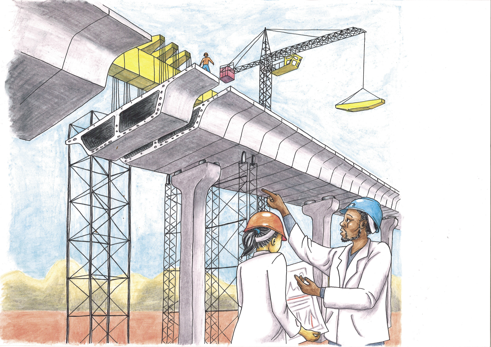
Figuur
1
1.1 Materiaal, gereedskap en planne
Figuur 4 tot 7 gee ’n
paar indrukke van
huisboutegnologie, die
gereedskap wat gebruik
word en ander aktiwiteite
wat inpas by die term
“Tegnologie”. Bestudeer die
prente noukeurig en probeer
verstaan wat in elke prent
gebeur. Wanneer jy die vrae
op bladsy 7 beantwoord,
behoort jy reeds ’n idee te hê
van waaroor tegnologie gaan.
Figuur 4
Die persoon wat hierbo gewys word, gebruik gras
om
sy dak te dek. Gras is ’n
natuurlike materiaal
. Dit groei
in die veld. Party soorte gras is baie beter vir dakke as
ander soorte. Om ’n grasdak te dek is nie maklik nie.
Daar is net ’n klein groepie mense wat dit behoorlik
kan doen.
Figuur 5: Sommige van die gereedskapstukke wat mense gebruik
om dakke mee te dek.
.
Figuur 6
Die mense in die prent hierbo gebruik geriffelde
sinkplate as dakbedekking. Dakplate van metaal kom
nie, soos gras, in die natuur voor nie. Mense gebruik
twee metale om dakplate te maak, naamlik yster en
sink. Die yster en sink word verkry deur vergruisde rots
te verhit om die metaal van die ander substansies te
skei. Dakplate is
mensgemaakte materiaal.
.
Natuurlike materiale word
op verskillende maniere
verander om mens-
gemaakte materiaal te
vervaardig.
.
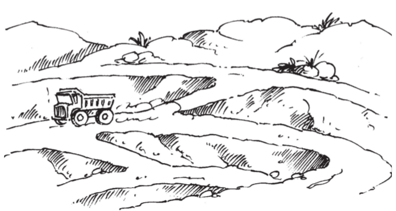
Figuur 7: ’n Oop myn waar rots wat sink bevat, versamel word,
soos by Sishen.
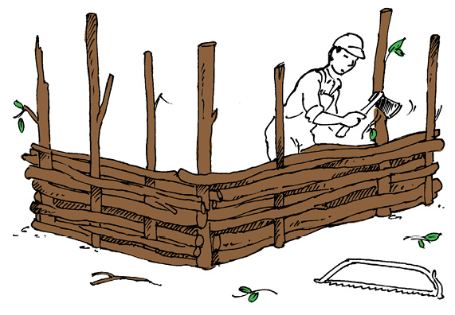
Figuur 8: Huis A
Figuur 9: Huis B
Figuur 10: Huis C
Figuur 11: Huis D
Huiswerk
Watter materiaal is gebruik om die huis in Figuur 8 te bou?
Is hierdie
materiaal mensgemaak of natuurlik?
Watter gereedskap gebruik die mense wat die huis in Figuur 8 bou?
Watter materiaal is gebruik om die
huis in Figuur 9 te bou?
Is dit mensgemaakte materiaal
of natuurlike materiaal?
Watter gereedskap gebruik die
mense wat die huis in Figuur 9 bou?
Watter materiaal is gebruik om die
huis in Figuur 10 te bou?
Is dit mensgemaakte materiaal
of natuurlike materiaal?
Watter gereedskap gebruik
die mense wat die huis in Figuur 10 bou?
Watter materiaal is gebruik om die
huis in Figuur 11 te bou?
Is dit ’n mensgemaakte materiaal
of ’n natuurlike materiaal?
Watter gereedskap gebruik die
mense wat die huis in Figuur 11 bou?
Twee meisies, Sarah en Tebogo, loop in die veld en
klim teen ’n klein heuweltjie
uit. Skielik kom ’n rots los en begin teen die heuweltjie afrol. Dit land op
Sarah
se voet, wat onder die rots vasgepen word. Tebogo probeer die rots oplig, maar
dit is te swaar vir haar. Sy kyk om haar rond en sien ’n ysterpaal. Sy probeer
om die rots met die ysterpaal op te lig en dit werk! Sarah slaag nou daarin om
haar voet onder die rots uit te trek.
Tebogo was nie sterk genoeg om die rots op te lig
nie en het toe ’n stuk
gereedskap
. gebruik. Gereedskap help ons om dinge te doen wat ons nie met ons
liggame kan
doen nie. Daar is ander soorte gereedskap, soos die voorbeelde hieronder.
Ons gebruik lepels, messe en vurke om mee te eet.
Ons gebruik skêre om papier en materiaal te sny. Dit werk baie beter as
om materiaal en papier met ons hande te skeur.
Ons gebruik selfone om met mense te praat wat ver weg is. Selfone is
praatgereedskap. Tweehonderd jaar gelede was daar nie selfone of telefone nie.
Destyds kon mense net met mekaar praat as hulle
naby genoeg was om mekaar te kon hoor sonder om enige gereedskap te gebruik.
Dokters gebruik ’n verskeidenheid van
gereedskapstukke om siek mense te behandel.
Party gereedskapstukke
soos messe en vurke en lepels, is maklik om te gebruik. Ander gereedskapstukke,
soos
skêre en skroewedraaiers, is ’n bietjie moeiliker om te gebruik. Ander
gereedskapstukke is
jaar gelede was daar nie selfone of telefone nie.
nóg moeiliker om te gebruik,
byvoorbeeld ’n kragboor.
’n Persoon wat sulke gereedskapstukke wil gebruik, moet opgelei wees.
Omtrent 50 jaar gelede, toe jou oupas en oumas
kinders was, het niemand selfone
gehad nie. Daar was ook geen televisiestelle in Suid-Afrika nie. Toe was die
meeste
paaie in Suid-Afrika ook gruispaaie. Teerpaaie is net in en om die groot stede
aangetref. Die meeste skole het ook nie elektrisiteit gehad nie.
Tweehonderd jaar gelede was
die wêreld heeltemal anders as nou. Elektrisiteit
was toe nog nie uitgevind nie. Mense het te voet gereis, of op diere, of in
karre en
waens wat deur diere getrek is. Skepe is voortgedryf deur mense wat geroei het,
of
met behulp van seile.
Een ding wat baie mense doen, is om praktiese
oplossings vir probleme te ontwikkel sodat mense
die goed kan kry wat hulle wil hê en benodig.
Om dit te doen gebruik mense hulle kennis en
vaardighede. Hulle gebruik ook gereedskap en
materiale. Wanneer oplossings vir probleme gesoek
word, moet mense probeer om nie die omgewing
te beskadig nie, en die behoeftes en veiligheid van
individue, gesinne en gemeenskappe in gedagte te
hou.
Al hierdie dinge saam word Tegnologie genoem.
Alle mense gebruik gereedskap, mensgemaakte
materiale en masjiene van die een
of ander aard. Deesdae doen mense ook al hoe minder dinge met hulle hande, en
gebruik minder natuurlike materiale as in die verlede.
Mense wat opgelei is om met spesiale gereedskap te
werk word tegnoloë
genoem.
Dit is vir tegnoloë baie makliker om werk te kry
as vir mense met geen opleiding
in Tegnologie nie
lets om oor na te dink:
In ’n spesifieke klein dorpie kry die
mense hulle
water uit ’n dam omtrent 3 km daarvandaan. Maar
toe tref ’n ramp die dorpie, en die damwal breek
tydens ’n vloed. Dit sal twee jaar neem om dit te
herbou. Gelukkig is daar ’n ou put naby die dorpie
met genoeg goeie water om in al die dorpsmense
se behoeftes te voorsien. Die put is egter baie diep en daar is geen manier om
die water na bo
te kry nie. Die dorpie is ook in ’n landelike gebied
met geen elektrisiteit nie.
Wat dink jy kan gedoen word om die water uit die
put te kry? Is jy seker dat jou plan gaan werk? Kan
jy ’n tekening maak sodat ander mense jou plan
sal verstaan?
Sibu verduidelik sy plan vir
sy pa.
Wanneer mense probleme in die gesig
staar, doen hulle gereeld die volgende:
ondersoek
,
ontwerp
, met ander woorde hulle maak planne
evalueer
hulle ontwerpe en verander dit soms,
maak
die dinge wat hulle ontwerp het,
evalueer
die dinge wat hulle gemaak het, en
die dinge wat hulle gemaak het, en
hulle ontwerpe aan ander mense.
Hierdie stappe word soms die
ontwerpproses
genoem. Jy sal reg deur die jaar
gereeld hierdie proses gebruik.
1.2 Ontwerp ’n kruiwa
Wees deel van ’n verhaal
Gedurende hierdie les gaan jy ’n belangrike rol in
’n storie speel. Dit is ’n storie oor
drie mense:
Mev. April, wat groente kweek en dit by
’n straatmark verkoop,
jy, en
mnr. Sethole, ’n skrynwerker. Hy werk
hoofsaaklik met hout, maar kan ook met
metaalplate werk.
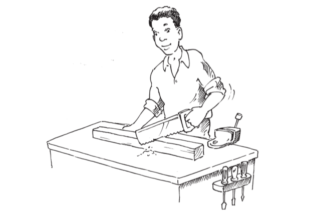
Figuur 12: ’n Skrynwerker is ’n tipe tegnoloog en gebruik
hout om dinge te maak.
Mev. April het ’n kruiwa nodig om haar groente na
die straatmark te vervoer. Die
kruiwaens wat ’n mens in die winkels kan koop, is nie vir haar doel geskik nie.
Sy
vra jou om na mnr. Sethole te gaan en hom te vra om vir haar ’n kruiwa te maak.
Jy gee die boodskap vir mnr. Sethole en hy sê vir jou:
“Jy sal vir my meer inligting moet gee
sodat ek kan weet hoe om die kruiwa te maak. Kruiwaens word vir
verskillende take gebruik en hulle kan verskillende groottes en vorms hê. Gaan
vra asseblief vir mev. April ’n klompie vrae en kom dan terug na my toe met die
inligting.”
Bykans elke tegnologieprojek
begin met die inwin van inligting. Sonder goeie inligting is dit nie duidelik
wat jy moet doen nie. Hierdie deel van die tegnologiese proses word
ondersoek genoem.
.
’n Kruiwa wat mev. April
in die winkel kan
koop, lyk soos die een hier regs. Sy sê dat
hierdie kruiwa nie goed sal werk vir haar
groente nie.
Figuur 13
Skryf ’n klompie vrae neer wat jy
vir mev. April kan vra.
Probeer dink watter
antwoorde mev. April dalk
op jou vrae sal gee. Skryf dan kort aantekeninge
hieronder om te verduidelik wat sy met die kruiwa
wil doen en hoe die kruiwa moet lyk.
Die beskrywing van hoe die
kruiwa moet lyk, is deel van
die
spesifikasies
vir die
kruiwa. Die aantekeninge wat
jy hier maak word soms die ontwerpopdrag
genoem.
Mev. April wil eerder die
verskillende groentesoorte
langs mekaar as op mekaar, pak. Hoe moet haar
kruiwa verskil van die kruiwa wat jy in ’n winkel
kan koop?
Jy is nou besig om ’n kruiwa
vir mev. April te
ontwerp
, nie
vir iemand anders nie. Jy moet
dus dink waarvoor sy dit gaan
gebruik.
Mev. April het ’n ou kruiwa sonder
’n bakgedeelte. Mnr. Sethole kan ’n
nuwe bakgedeelte maak en dit aan
die ou kruiwa vasheg.
Figuur
14
Maak ’n skets
hieronder wat wys hoe jy dink die nuwe bakgedeelte vir die
kruiwa behoort te lyk.
Watter materiale kan gebruik
word om die
bakgedeelte vir die kruiwa te maak? Beskryf die
opsies en sê watter een jy verkies. Sê ook hoekom
jy hierdie materiaal verkies.
YJy is steeds besig om vir mev.
April ’n kruiwa te ontwerp. In
hierdie stadium oorweeg jy
moontlike materiale, dus kan jy
gepaste materiale uitsoek
om die kruiwa te maak.
Next week
During the next two weeks, you will
learn to make different types of drawings. Drawings will help
you to think about things you may make, and to share your ideas
with other people.
2
How to say things with
drawings
Sketching and drawing are very
important skills in Technology. They allow us to share our
ideas, designs, and technical solutions with other people. In
this chapter, you will learn what the main purpose of graphics
are. You will also learn about the different meanings of thick
and dark lines, thin and feint lines, and dashed lines. And you
will learn a little bit about scale and how to show sizes on
drawings. But the most important thing about sketching and
drawing is that you need to practise. So in this chapter you
will learn how to do some simple sketches and how to do a flat
drawing showing sizes.
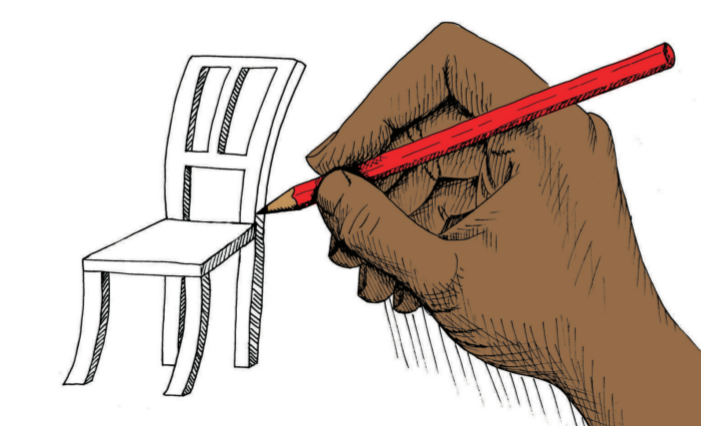
Figure 1
Figure 2: Drawings in a shoe design studio
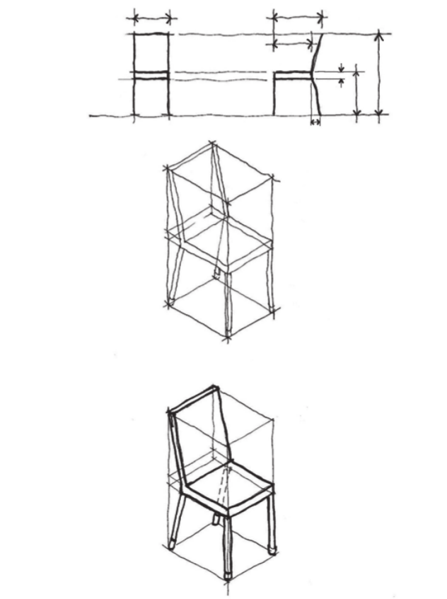
Figure 3: Drawings to design a chair
2.1 A new cupboard for the classroom
Your classroom needs a cupboard to
store books.
How many doors
should it have?
When you answer these
questions, you are writing design specifications for the
cupboard. Whenever you plan to make something, it is useful
to first think about what you want to make, and to write your
ideas down. You can then give your design specifications to
someone else to read. That person will maybe make some useful
suggestions that will improve your design. Without written
design specifications, it is very difficult to get good
suggestions from other people.
How many shelves
should it have?
What should it be
made of?
How high and how
wide should it be?
How deep should it
be?
Make
a rough sketch in the space below to show what you think the
cupboard will look like.
Make a bigger and better sketch of the cupboard. Write notes
next to your drawing to show where the doors and shelves are.
Also write notes to say how big different parts of the cupboard
should be, in millimetres (mm).
The lengths of different
parts of an object are called the dimensions. Things like the
height, width and depth of the cupboard, as well as the
distance between the shelves, are called the dimensions.
Should the
real cupboard be three times bigger than your drawing?
A real object is often
several times bigger than a drawing of it. If the object is
five times as big as the drawing, we say the scale of the drawing is"1 to
5". This is written as "1:5".
How many
times bigger should the real cupboard be than your drawing?
2.2 Different types of lines in drawings
In this
drawing, a dashed line is used to show the footinside the
shoe.
Figure 4
Dashed lines are used to show
things that are hidden, like the foot that is inside this
shoe.
Use dashed lines to
show the bodies of the two people in the car below.
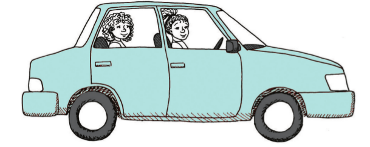
Figure 5
Draw dashed lines
on the drawing of a cupboard on the next page to show four
shelves inside.
A drawing
like this is called a working
drawing. A working drawing is an accurate drawing that
shows the real sizes.
Solid
lines are used to show the visible edges of objects on
drawings.
When you want to show something
that is behind something else, you should use a dashed line. Dashed lines are used to show
hidden objects.
Just like you use a language
such as English to communicate with others, sketches and
drawings are a "language". And just like English, drawings
have rules to help us understand them better. These rules are
known as "drawing
conventions".
Sizes, which can also be called
dimensions, are shown with a
thin dimension line with arrows
at both ends. They are drawn a little bit away from
objects.
Short extension lines, which do not touch objects,
show you what is being measured.
Dimensions are normally given in mm.
It is therefore not necessary to write "mm" after the number
indicating a dimension on a drawing.
Working drawings are used to design
things according to exact sizes. Designers communicate the
exact sizes of each part of an object in working drawings, so
that each part fits to make the final product work properly.
For example, a bicycle pump can't have a push rod that won't
fit inside its outer tube. See Figure 8 below.
By looking at
some drawings and practising to sketch, you have learnt to:
Use thin
feint lines for guidelines, such as the lines for a guide
box.
Use thick lines to show the outside edges of an
object,such as the edges you can see from the
front.
Use a
solid line to show these edges.
You have also learnt that dimensions are shown by
writing the length of an object above a dimension
line.
A dimension line has small arrows at each end.
These arrows touch small extension lines that show
where the length starts and where it ends.
Dashed lines show hidden details of drawings.
Homework: Study drawings of a
bicycle pump
Name the parts of
the pump shown in this sketch.
How long is the
outer tube of this bicycle pump?
Sketching and drawing are
important ways of recording and communicating ideas.
For designers and
technologists, sketching is like taking notes. It reminds
them of their ideas and helps them to share these ideas with
others. Sketching is usually done without any instruments.
All you need is a pencil and some paper.
How long is the
push rod? How do you know that?
Look at the drawing of a different
bicycle pump below. This drawing is accurate, so we call it a
scale drawing. It is four times
smaller than a real pump. We say it is drawn to a scale of 1:4.
That means that if you measure the length of the outer tube of
this drawing, it will be four times smaller than the outer tube
of the real pump.
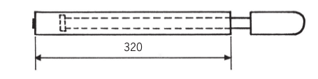
Figure 9: Bicycle pump. Scale 1:4
Why is the outer
tube of this pump drawn with solid lines?
What other part of
this pump is drawn with solid lines?
Why is part of the
push rod drawn with dashed lines and other parts with solid
lines?
What type of line
shows how long the outer tube is?
How long will the
outer tube of the real pump be?
Use the scale on
the drawing to find out how long the handle will be on the real
pump.
Now draw a
dimension line on the pump drawing to show how long the handle
will be.
Name three
different types of lines that you can see on the drawing.
What is the scale
of the working drawing of the cupboard three pages back? You
will have to take measurements to find out what the scale
is.
2.3 Free-hand sketching
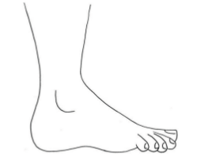
Figure 10
The artist who drew the foot in Figure
10, first drewonly light thin lines, like the ones shown on the
right.
She then used these feint lines as
guidelines to draw the foot.
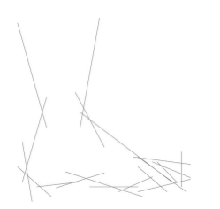
Figure 11
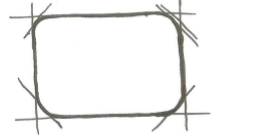
Figure 12
Sketching lines
Use thin, feint lines for the guidelines, which are
called construction lines.
Use thicker, dark lines for the outlines of sketches.
Sketch a rectangle with rounded
corners.
Your
drawing should be about two times as big as the drawing on
the right. It is drawn to a scale of 3:1.
Sketch a
guide box. Do not use a ruler. Use light guidelines.
Mark the
corners with feint lines.
Make the
corners round.
Now make
the outline thicker.
Homework
Sketch a triangle with rounded
corners.
Your
drawing should be about three times as big as the drawing on
the right.
Sketch a
rectangular guide box without a ruler.
Mark the
centre of one side at B, and sketch lines to the opposite
corners.
Round the
corners as you did for the rectangle.
Make the
outline of the triangle with rounded corners thicker.
Figure 13
Sketch a circle.
Figure 14
Your
drawing should be about four times as big as the drawing on
the right.
Sketch a
square guide box. Do not use a ruler.
Sketch
lines from one diagonal corner to the other.
Mark off
the positions C of the centre of each side.
Mark
points D on the diagonals, halfway between the centre and
each corner.
Mark
points E halfway between the Ds andthe corners.
Sketch a
curved line to join up the C's and the E's;
C-E-C-E-C-E-C-E.
You have
sketched a circle. Now make the circle's outline
thicker.
A drawing of a bicycle pump is
shown
on the page. Make an accurate 1:4 scale drawing of the
pump on the grid paper below.
Note the
following:
The grid
shown below has 5 mm spacing between lines.
Use a
ruler and make sure you remember the different line
types.
To scale down means to make a
drawing smaller than the actual object.
To scale up means to make a drawing
bigger than the actual object.
The drawing at the bottom of the page shows the
front view of a house. Make a bigger drawing of the front view
of this house.
Note the
following:
The 6 m
length of the real house should be 60 mm on your
drawing.
Show the
height of the side wall using a dimension line on your
drawing.
Show the
height to the top of the chimney.
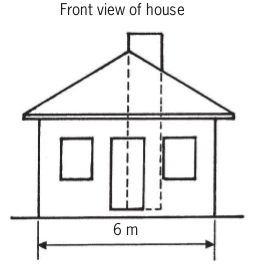
Figure 16
Next week
Next week, you
will learn how to make drawings that show more than one side of
an object.
3
Draw what you see
In this chapter, you will learn how
to make two types of drawings. Drawings help us to show others
what our ideas look like. Drawings also help us to evaluate our
ideas, to become aware of problems and to develop
solutions.
Figure 1
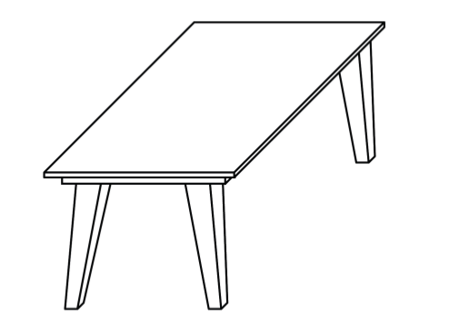
Figure 2(Drawing A)
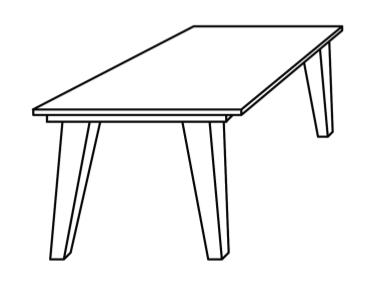
Figure 3(Drawing B)
3.1 Two types of drawings
Look at drawings A
and B again. Do you see drawings of two different tables, or
two different drawings of the same table? Take your time and
think carefully before you answer.
Look at drawing A
and drawing B on the opposite page. Also look at drawing C and
drawing D on the next page. Is drawing C or D the same as
drawing A, only smaller? Explain why you say so.
How do drawings A
and B differ?
Drawings such as Figure 4 (drawing C) are called
perspective drawings, or 3D artistic drawings.
In a perspective drawing, the artist tries to show
what she actually sees. You cannot take accurate
measurements from perspective drawings.
Drawings such as Figure 5 (drawing D) are called
3D oblique drawings. They look different from
what you actually see when you look at the object.
Measurements can be taken from 3D oblique
drawings.
In the next lesson, you will make 3D
oblique drawings.
3.2 3D oblique drawing
Make a 3D oblique sketch
You can make
a good 3D oblique sketch of a stove if you follow the
instructions given below.
It is
easier if you first draw a box that shows the shape of the
stove. Do that on the next page. Do not use a ruler.
To draw a
box, first draw a rectangle to show the front of the box, as
shown in step 1 below. Draw the rectangle in the left lower
part of the page.
Draw
another rectangle of the same size as shown in step 2 below.
Then draw sloping lines as in step 3 to show the edges of the
box that go from the front to the back.
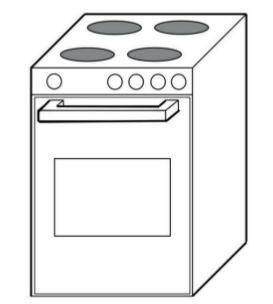
Figure 6
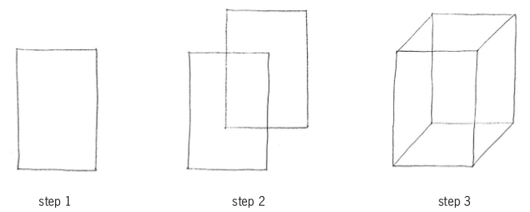
Figure 7
The word sketch is often used to indicate a drawing
that is made without a ruler or other drawing
instruments.
Instead of saying sketch, you can also say free-hand
drawing.
Make your 3D oblique
sketch on this page. Make it big.
Change your box into a
stove
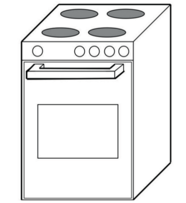
Figure 8
Now see if you can change your box into
a stove. Here are some tips:
The plates
on top of a stove are circles. On a drawing like this, they
will be squashed circles (ellipses).
The
circles for the knobs are real circles. This is because
everything on the front of the drawing is the same as it is
in real life.
Look at
how the handle is drawn. It comes out of the front face. To
do this, use sloping lines coming forward.
Make all
lines that you can see on the objects thick.
Something to do at home
3D oblique drawings are
easier to make on grid paper, like the one on the next page.
Make a better drawing of the stove on the grid paper. One of
the sloping lines is already drawn.
Accurate 3D oblique
drawing
The drawing below is an accurate
oblique drawing of the stove.
Write down the
length, height and breadth of this stove.
Now measure the
length, height and breadth on the drawing with a ruler.
What do you notice
about the breadth line? Is it drawn to the same scale as the
length and height lines?
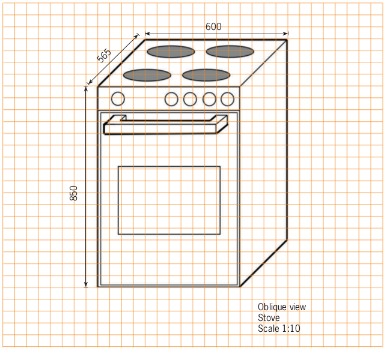
Figure 9
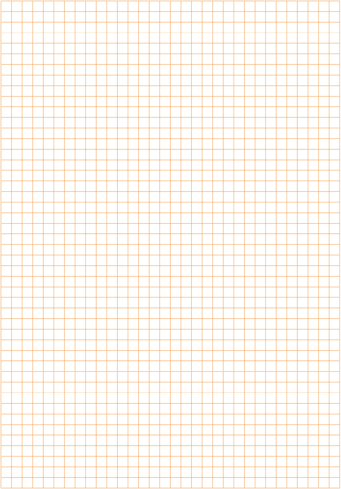
A few important things about oblique
drawings
For the front view of an oblique drawing, we use true scale
measurements. So if the length of the object is 600 mm and the scale is 1:10,
you will draw the length as 60 cm (600 mm).
But in the sloping breadth direction, you must halve the true scale measurement. So if
the breadth is 565 mm and the scale is 1:10, you must draw the breadth line as 282,5 mm or
28,25 cm.
Figure 10
Use the grid on the
previous page to make an accurate 3D oblique drawing of the
stove, with scale 1:5.
In 3D oblique drawings, all lines in
the breadth are parallel, as shown above.
3.3
Perspective drawing
When we see something far away, it
looks small. When you are close to an object, it looks big.
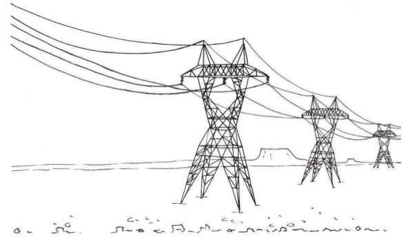
Figure 11
When you make a 3D drawing that shows
things getting smallerin the distance, it is called a
perspective drawing.
Look at this
sketch of a fence. It has been drawn going back into the
distance.
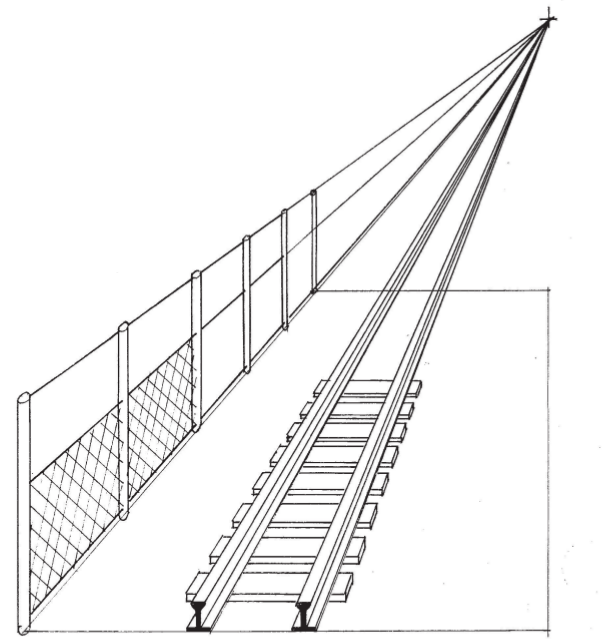
Figure 12
Use the steps below to draw
the fence on the next page
From the bottom
left-hand corner of your page, draw a fence post. This will be
the tallest post because it is the closest to you.
In the top
right-hand corner of the page, draw a point. This point is
called the vanishing point (VP).
It represents a distance so far away that you can no longer see
how tall something is.
From the top of the
front post, draw a thin guideline to the vanishing point (VP).
You can use a ruler for this.
From the bottom of
the front post, draw another thin guideline to the vanishing
point.
Draw a second post
behind the first. The bottom of this post must start at the
bottom guideline and it must stop at the top guideline.
Carry on drawing
more posts going backwards into the distance.
Keep in mind that
the posts will look as if they are getting closer and closer
together.
Now add some
crossing lines to represent fence wire.
Draw the fence
on this page.
Draw a matchbox in
perspective
In the bottom
left-hand corner of this page, draw a rectangle to represent
the front of the matchbox. Part of the rectangle is already
drawn for you.
From each
corner of the rectangle, draw a thin guideline to the vanishing
point. You can use a ruler.
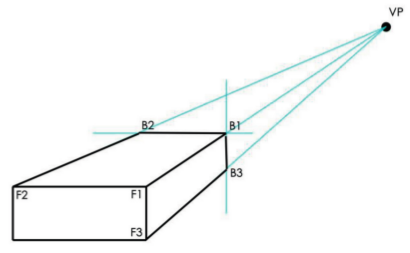
Figure 13
Moving back along the guideline from
the vanishing point, mark off a point (B1), which makes the
breadth of the matchbox look right.
From this point (B1), draw a
vertical line down to the bottom
guideline. This is the side edge at the back of the
matchbox.
From the same
point (B1), draw a horizontal
line towards the left hand guideline. This will represent the
top edge at the back.
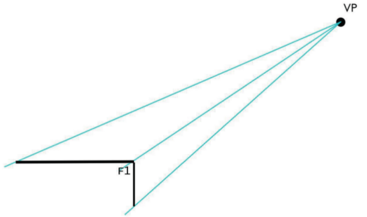
Figure 13
Perspective drawing with
texture and shading
Look at the
open matchbox shown. Thick and thin lines have been used to
make the edges stand out. Try to do this on the matchbox you
have already drawn, or on a new drawing.
Figure 15
Draw an
open matchbox using single vanishing point perspective in the
space below.
Add more shading, and even
colour
When a
surface is flat, the whole surface looks as if it is the same
colour. But some surfaces look darker than others, depending on
where the light is coming from.
To shade a box so that it looks
3D,draw a new box in the space belowand do the following:
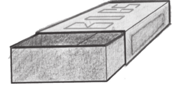
Figure 16
Colour the
front, top and sidesurfaces lightly in one colour. You can
use a pencil or a coloured pencil.
Choose the
face that will be the second darkest. Colour this surface a
second time.
Choose the
face that will be the darkest. If the light is behind the
drawing, this will be the front face. Then lightly shade this
surface two more times, so the darkest face will have been
coloured three times.
Next week
Next week, you will learn about
mechanical systems. You will explore how levers work to make it
easier to move things.
4
Push and lift objects
In this chapter, you will learn about
ways in which people manage to do things that they cannot do
with their bodies alone.
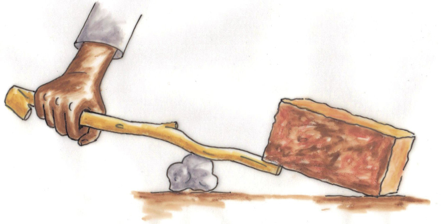Figure 1
Special projects
If you have time to spare in class or
at home, give one or more of these activities a try:
Build a working
model of the water lever on the next page. If you can make it
in the next two days, you can use it in lesson 4.3.
Look carefully at
the coloured diagrams on the next page. Try to see what
properties of levers can be seen in the diagrams. Write
captions for the drawings that explain what they show.
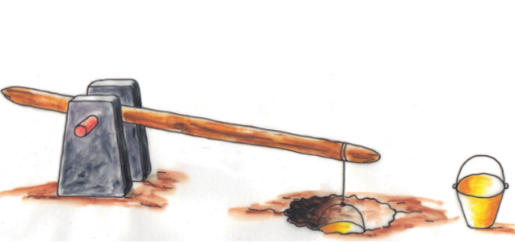
Figure 2
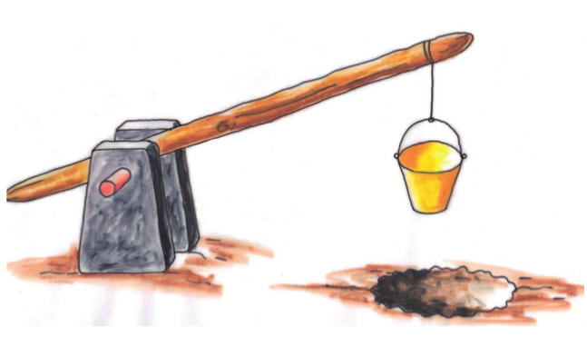
Figure 3: The buckets are used to take water from the well.
4.1 Lift things with a lever
In the pictures below, Tom tries to
lift one side of a block of concrete with a lever. The pictures show three different
ways in which he can try to do so.
Which way do you
think will work best, and why do you think so?
The lever rests
on a small stone and will turn on the stone. When Tom pushes
the one end of the lever down, the other end pushes the
concrete block up.
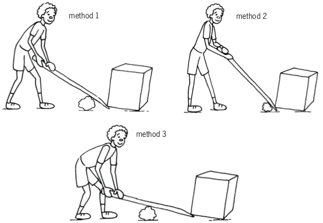
Figure 4
Describe what is different about the lever in each of the
three cases.
Join two classmates and work
with a lever
You need three
things for this activity:
a stick of
about 30 cm long, that can be used as a lever,
a brick or
a stone about the size of a brick, and
something
on which the lever can be supported.
Now do the
following:
Use the stick as a lever to lift one
side of the brick.
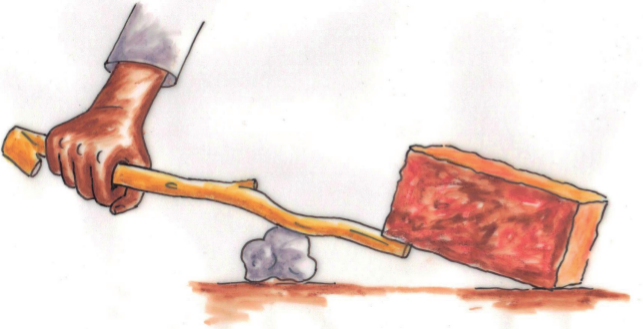
Figure 5
The point where the stick is supported by the brick
or stone is called the fulcrum or pivot point.
Take turns to use the stick as a
lever to lift the one end of the brick. Do it with different
positions of the fulcrum, so that you can answer the question
below.
When does the lever
help you most? Is it when the fulcrum is close to the brick or
when it is far from the brick?
If you did not do the above,
do this:
Put your pencil against the edge of a
book and try to lift the one side of another book up, as shown
in the picture below.
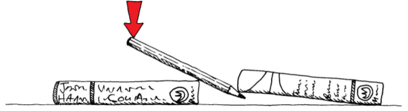
Figure 6
Do this with the edge of the book on
the left in different positions below the pencil.
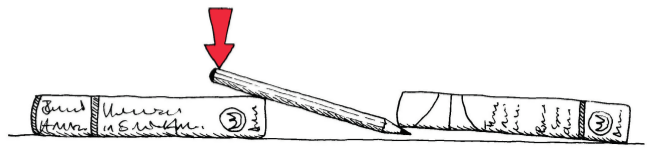
Figure 7
In which
position of the fulcrum does the pencil give you the greatest
"advantage" for lifting the book?
In this case, the word
advantage means that the lever makes it easier for you to
lift the object.
Some words that may be new
to you, or are used in a new way, are printed in quotation
marks, for example "advantage". This is to tell you that you
may not immediately understand the word, but you will learn
what it means as you continue.
When something is too heavy to lift by hand, you
can use a lever to help you lift it. If you want to lift
a heavy object, you should use a long lever and the
fulcrum should be close to the object that you want
to lift. If you give a soft or weak downwards push
on the one side of the lever, there will be a strong
upwards push on the object on the other side of the
lever.
Scientists and technologists use the
words "mechanical advantage" when referring to this. In the
pictures below, the lever gives you a greater mechanical
advantage when the fulcrum is closer to the brick.
Have another look at Figure 4 of this chapter. Which
method gives Tom the biggest mechanical advantage
when he uses the lever?
The downward push that Tom makes on the lever is
called the input force or effort.
The weight of the concrete block that tries to keep
the other end of the lever down is called the load.
The upward push on the load is called the output
force or effect.
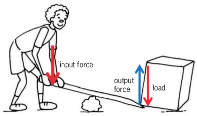
Figure 10
A lever like this where the
fulcrum is between the input
force and the output force, is
called a first-class lever.
When you use a lever to lift an object,
the push on the object may be stronger than, equal to or weaker
than your input force.
Where is the input
force, the load and the fulcrum on each of these pictures?
Write your answers next to the pictures.
The output force may be
smaller than the input force. In this case, technologists say
the mechanical advantage is smaller than 1. This is actually
a mechanical disadvantage.
The output force may be
bigger than the input force.In that case, technologists say
the mechanical advantage is greater than 1.
If the output force is equal
to the input force, technologists say the mechanical
advantage is 1.
Figure 11
Important: something you need
to do at home
Bring a box or two pieces of cardboard
that are at least as big as an A4 sheet of paper to your next
Technology class. You will need this to make a cardboard lever
and to do a few experiments.
It helps the
environment if you pick up boxes or pieces of cardboard and
other trash that lie around in the street, so pick these up and
help to keep our streets clean!
4.2 Move things without touching them
A lever can
turn around the fulcrum.
We also say
the lever "pivots" around the fulcrum.
Figure 12
In the diagrams below, the fulcrum is
in different positions.
In each case, state whether the
mechanical advantage is bigger than 1, equal to 1 or smaller
than 1.
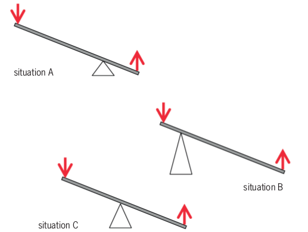
Figure 13
Make a lever with a base
In this activity, you will make a lever
that you can use to do a few experiments. Doing the experiments
will help you to understand levers better.
Figure 14
Mark the fulcrum of
the lever in the photograph.
Instead of fulcrum we can say
pivot point. It
means the same.
If you make your lever from cardboard, you will need the tools
and materials below.
Tools:
Materials:
a
pair of scissors,
a
sharp pencil or a nail.
a
strip of corrugated cardboard about 30 cm long,
a
piece of corrugated cardboard about as big as an A4
sheet of paper,
a
sheet of used paper,
a
piece of sticky tape, and
a
small box or bag with sand or stones inside.
Before you start, look carefully at the photo on the
previous page. Make sure you understand how your lever will
work.
Use a strip of corrugated cardboard about 30 cm long and 3 cm
wide for the lever. Mark a position for a hole about 4 cm from
the one end, in the middle of the width of the cardboard.
You may have construction
kits or perforated Masonite available. Use it instead of
cardboard for this work. Be careful though and do not limit
your opportunities to acquire basic skills by using "easy"
materials.
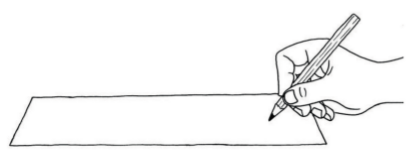
Figure 15
Use a sharp pencil
to make a hole at the mark.
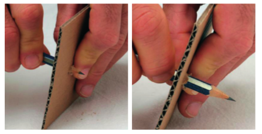
Figure 16
Safety precaution:
Make sure you do not pushthe
pencil into your finger.
Make a hole in the
sheet of corrugated cardboard, about 8 cm from one end, as
shown in the diagram.
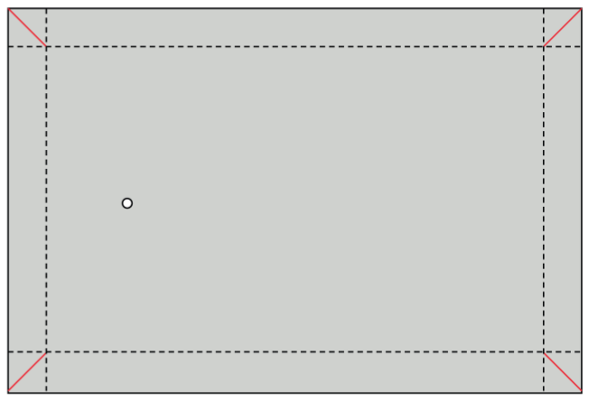
Figure 17
This
will be the base to which you will attach your lever.
You can use a
"paper dowel" to attach the lever to the base. It can act as a
pivot around which the lever can swing. To make a paper dowel,
tightly roll paper around your pencil as shown below.
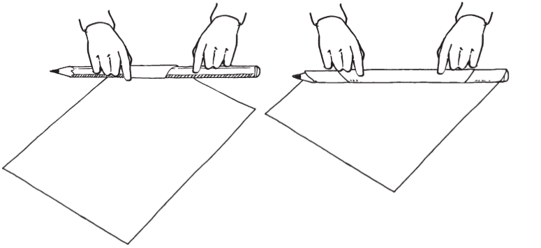
Figure 18
Once you think it
is strong enough, cut off the remaining paper.
The holes that you
punched into the cardboard strip and sheet will be rough on the
one side and smooth on the other.
Figure 19
Put the strip on
top of the sheet so that the smooth sides of the holes are
between the strip and the sheet. Put your paper dowel through
the holes so that it connects the strip with the sheet.
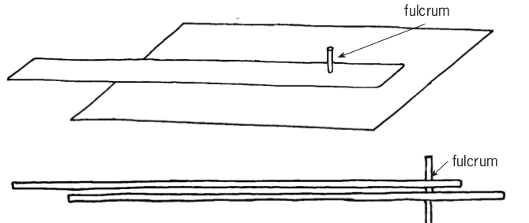
Figure 20
Fold the paper
dowel over on both sides. Tape it down at the bottom of the
support sheet.
Figure 21
Try to use your lever to move the
small bag of sand around on your desk.
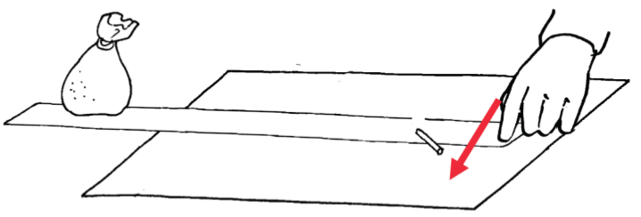
Figure 22
It may not work
very well. Think a bit, and then describe how you can improve
your lever so that it will work better when you want to move
the bag around.
Here are two
improvements that you can make to your lever:
You can
make cuts and fold the card up to form flanges on both sides at each end of the
lever. The sketch below shows a piece of paper that is yellow
on top and red at the bottom. One cut was made and part of
the paper was then folded up to make a flange.
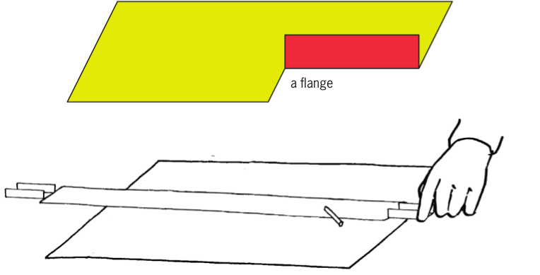
Figure 23
You can
add a paper strip that prevents the lever from lifting
up.
Figure 24
Evaluation and
improvement
Technologists evaluate their
work all the time. When they see that something will not work
well, they change it to make it work better. When you do your
mini-PAT later this term, you will design a device that works
with two levers. You will make a working model of your
design. When you do that, you should also evaluate your
design all the time. Look for opportunities to improve your
design and your working model.
You can improve your lever on a base
by adding "spacers" to keep the lever some distance from the
base.
You can cut the spacers from
the same cardboard that you used for the lever.
You can glue them to each other and to
the lever. It may even be better if you add spacers at the
fulcrum too. You will have to cut holes in your spacers, so
that the peg or dowel can pass through the holes.
Round spacers with holes in the middle
are called washers. Washers are often used when things are
tied together with bolts and nuts.
Figure
26
4.3 Do different things with levers
Change direction of
movement
Levers can
be used for reasons other than to gain a mechanical advantage.
When you sweep the floor with a broom that has a long handle
you use the broom as a lever. The long handle makes it possible
to sweep over a large area while moving your hands only for a
short distance. In this case the lever (the broomstick) gives
you a distance
advantage, although there is no mechanical disadvantage.
Levers
also change the direction of movement. If you
push the one end of the blue lever below down, the other end
moves up.
Figure
27
Figure
28
In the above case, the output movement
is in the opposite direction than the input movement. Linkages
and guides can be used, as shown in the diagram below, to
control the change of direction of movement caused by a
lever.
The blue bar on this diagram
indicates a lever that pivots around point O. The yellow bar is
a rod that can be used to push end A of the lever. The red bar
can only move between the two black strips. The black dots at A
and B indicate linkages (for example dowels that fit loosely in
holes), around which the yellow, blue and red rods can
pivot.
If the
yellow rod is pushed in the direction of the blue arrow, in
what direction will the red rod move? Make an arrow on the
diagram to show the direction.
If you
wish, you may build a system like this from cardboard.
Evaluate a design
Simon wants
to build a device that will help him to lift heavy objects. His
idea is to drive one lever with another lever, so that he can
have a big mechanical advantage. He made this drawing of his
design.
Do you think
Simon's design will work?
Write down
why you think it will work, or why you think it will not
work.
Also suggest how
he can improve his design.
Figure
30
Redesign a water lever
Have another look at Figure 3 on page 46. It shows a
big lever that lifts buckets of water out of a well.
Strong, young people can easily push the lever
down at the short end to lift a bucket of water out
of a well. But older and sick people, who are not so
strong, find it very difficult to do this.
How can this lever be redesigned so
that it becomes easier to lift a bucket of water?
Next week
In the next chapter, you will learn
more about effort and load, and how the fulcrum can be changed
around to make other types of levers. You will also learn more
about other types of levers.
5
Other classes of levers
In this chapter, you will learn about
two more types of levers, which are also called classes of
levers. In first-class levers, the fulcrum is somewhere between
the effort and the load. In the other two classes, the fulcrum
is at one of the ends.
Figure 1
Figure 2: These pictures show two
corrugated cardboard sheets of about 20 cm long and 10 cm
wide. The one piece has the corrugations over the width,
and the other piece has the corrugations over the
length.
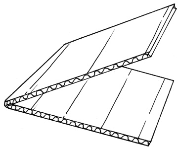
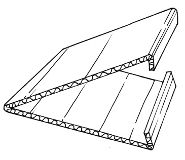
Figure 3: Both pieces are folded in
the middle to form springs. The edges are folded to form
flanges.
5.1 The three classes of levers
Lift your finger in three
different ways
Put your pencil on the desk in front of
you.
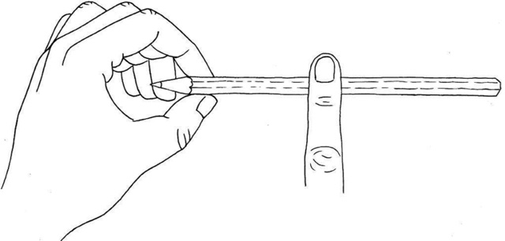Figure 4
Press the pencil down in the middle
with right index finger, now try to lift your index finger by
lifting the pencil at the sharp end with your left hand, as
shown below. When you do this, the pencil acts as a lever.
Figure
5
The fulcrum
of the lever is at the right end of the pencil, where it
rests on the desk. Mark the input force with an arrow on
the sketch above. Where is the load?
In Figure 5 the
input force is at one end of the lever, and the fulcrum at the
other end. How is a first-class lever different from this?
Press the pencil down
at the sharp end with your right index finger, and try to lift
your finger by lifting the pencil in the middle with your left
hand, as shown below.
Figure
6
The fulcrum of the
lever is at the left end of the pencil, where it rests on the
desk. Mark the effort with an arrow on the sketch above. Where
is the load?
In the above case,
the load is at one end of the lever, and the fulcrum at the
other end. How is the situation on the previous page different
from this one?
You used the pencil as a third-class lever in the above case. On the
previous page, you used the pencil as a second-class lever.
To use the pencil as a first-class
lever, you need to add support somewhere between the two ends
to act as a fulcrum.
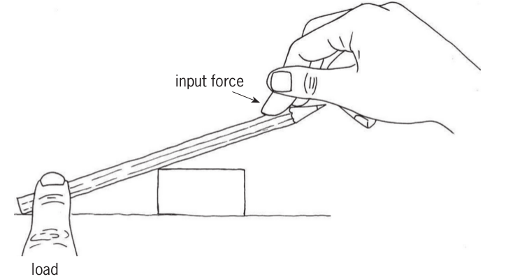
Figure 7
Do the experiments
on the previous two pages again. When do you get the biggest
mechanical advantage: when you use the pencil as a second-class
lever or when you use it as a third-class lever?
Fulcrum is another
word for pivot point.
Levers like this one, where the pivot point is
between the input force and the load, are called
first-class
levers.
When the load is between the input force and the
pivot point, it is called a second-class lever.
When the input force is between the load and the
pivot point, it is called a third-class
lever.
5.2 Practical examples of different classes of levers
This boy will
swing the hammer to hit the nail into the wall.
Figure 11
In this situation, his forearm and the
hammer together form a lever. The lever swings around the
elbow, so the elbow forms the fulcrum.
Is his forearm and
the hammer a first-class lever, a second-class lever or a
third-class lever?
Can you think of a
sport where a person swings an object to hit something?
Rest your right
elbow on your desk, then pick up something with your right hand
while keeping your elbow on the desk.
Do it again, but this
time hold your left hand lightly on your right arm, just above
the elbow.
Do you feel the muscle
movement inside your arm?
Figure
12
The diagram below
explains how your arm works.
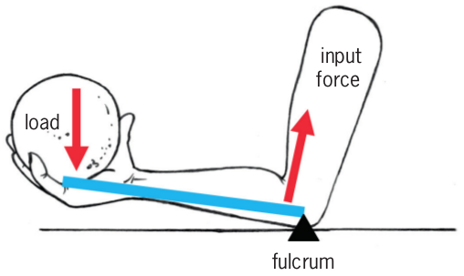
Figure 13
When you pick something up in your hand, your
arm works like a third-class lever and the input
force is between your elbow and your hand. Your
elbow acts as the fulcrum and the load is in your
hand.
In each of the
pictures below, draw a small triangle to indicate where the
fulcrum is, and an arrow to indicate where the input force is.
Make a letter L to show where the load is. Also state in each
case what class of lever it is.
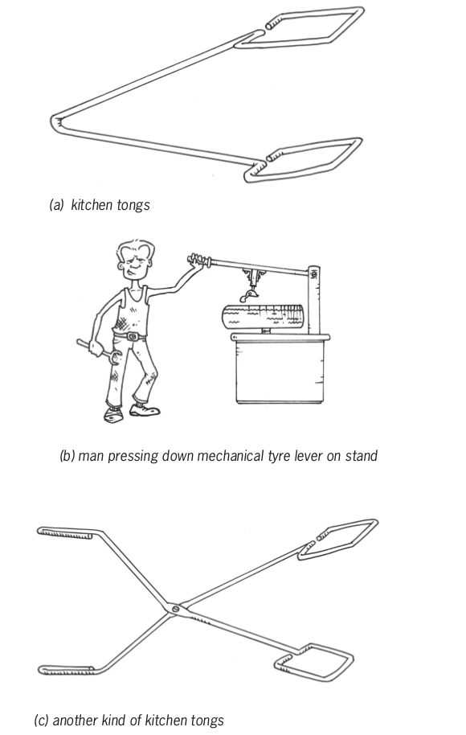
Figure 14
5.3 More practical examples of different classes of
levers
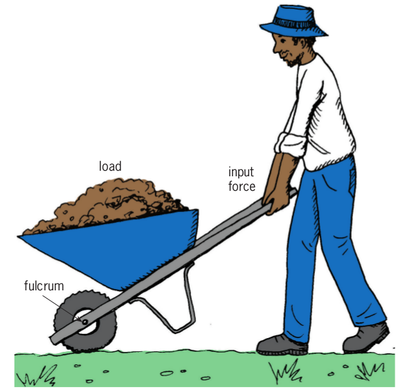
Figure 15
When you use a wheelbarrow, the
axle of the wheel is the fulcrum and your arms provide the
input force. The load is between the fulcrum and the input
force. This is how a second-class lever works. The
nutcracker
below is also a second-class lever.
An easy way to remember how
a second-class lever works, is to think of a wheelbarrow or a
nutcracker.
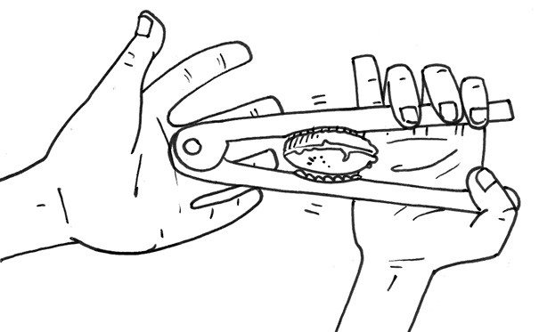Figure 16: A
nutcracker
Make a lever on a base
plate
Use corrugated cardboard to make a
lever on a base plate, as shown on this scale drawing. The
scale of the drawing is 1:3.
Figure 17
For the
lever, the corrugations must have the same direction as the
length of the lever. Use a strip of cardboard 6 cm wide, and
fold up the edges along the length to form flanges as shown on
the right.
Figure
18
You can use this lever to move a small
box filled with sand. You can do this in two ways: by using the
lever as a second-class lever or by using the lever as a
third-class lever.
Make free-hand
sketches to illustrate the two ways in which your lever can be
used.
Use your lever and
sandbox to investigate when you get the biggest mechanical
advantage, with a second-class lever or with a third-class
lever. Write a brief report below.
Next week
In the next chapter, you will
investigate and learn how levers can be linked, and how they
can be used for a variety of purposes.
6
Tools with two or more levers
In this chapter, you will learn how
levers are combined to make different tools.
Figure
1 : A set of
pliers consists of two levers attached at the same pivot
point.
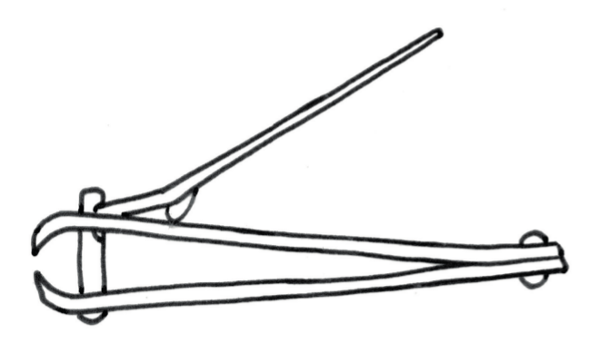
Figure 2
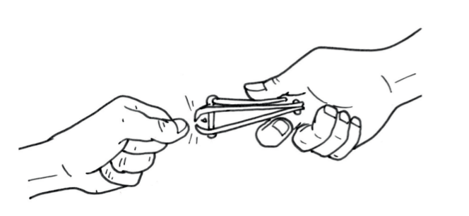
Figure 3
6.1 Pairs of first-class levers
Work with scissors in different ways
First answer the questions below and
then do the experiment. Find out which way or method of using
scissors works the best. Look at the two methods of using
scissors in the pictures below.
Figure 4Figure 5
What is the
difference between these two methods of using scissors?
With which method
will it be the easiest to cut? Explain your answer.
Are there any
levers in a pair of scissors? If so, how many, and what kind of
levers are they?
In diagrams A, B and C below, the input force on the blue blade
is indicated with a red arrow in each instance. In diagram A
the load on the blue blade is indicated by a black arrow.
Draw an arrow to show where the load is in diagrams B and
C.
Figure 6: A pair of scissors is
actually two blades that are linked together so that they
work like two levers.
Figure 7
In which case is
the mechanical advantage of the blue lever the greatest, and in
which case is it the smallest?
In which case, or
cases, is the mechanical advantage of the blue lever bigger
than 1?
Can scissors cut thick
objects?
Why will an
ordinary pair of scissors not work well to cut
the branches of a tree?
Figure 8
Make a free-hand
sketch of the type of scissors that can cut the branches of
trees. Why will it work?
Figure
9
Why will an
ordinary pair of scissors not work well to cut a crashed car
open to free trapped passengers?
Suppose you have to
design a cutting tool that can be used to cut through metal. In
which ways will this tool be different from an ordinary pair of
scissors?
6.2 More tools with levers
What is the best way to crack
a nut?
You can use pairs of levers to
compress, crush or crack things.
Figure 10
Which class of
lever is used in each of these nutcrackers?
Quickly draw a hand
in each case below to show how you can press the hardest on the
nut.
Figure 11
Mark and
label the input
force, load and fulcrum clearly on each of the above
drawings.
Which of the
three nutcrackers do you think will work best? Explain why you
think so.
A label is a word or
sentence that you write next to a drawing to describe or to
name a part of the drawing. When you write one, you are
labelling a drawing.
Three different kinds of kitchen tongs
and two pairs of pliers are shown on the next page.
Describe the
differences between type A and type B kitchen tongs.
How does type C
kitchen tongs differ from types A and B?
Which of the three
types of kitchen tongs work in the same way as a pair of
pliers? Explain your answer.
Describe a
situation in which a pair of pliers would be useful.
Make a free-hand
drawing of a pair of levers that can be used to pull out thorns
from your foot. This tool is called a pair of tweezers.
Which class of
lever did you choose for your design in question 9?
Make
a free-hand drawing of tweezers with a different class of lever
than the tweezers in your first design.
Figure 12Figure 13
6.3 Many levers in one device
Examine and redesign a nail
clipper
Figure
14
A bigger drawing of the nail clipper on
its own is shown below, and a schematic diagram of a nail
clipper is shown on the next page.
Figure
15
A schematic diagram does not
show an object as it really looks. It is drawn to show some
parts of the object more clearly than if you were looking at
the real object.
Look at the red
part on the diagram on the next page. It is a lever. What class
of lever is it when the nail clipper is used?
Show the effort and
load on the red lever with arrows and labels. Also show the
pivot point with a small triangle and a label.
Figure
16
The blue part of
the nail clipper is a pair of levers. Are they used as
first-class, second-class or third-class levers?
Show the effort and
load on one of the blue levers with arrows and labels. Also
show the pivot point with a small triangle and a label.
Is the effort on
the lower blue lever the same as the load on the red lever or
not? Explain your answer.
Can
the above design be changed so that the nail clipper could cut
harder objects than finger nails, for example pieces of metal?
Make a schematic drawing to show how that could be done and
explain why it will have a greater mechanical advantage than
the design above.
Investigate another
combination of levers
The red and blue mechanism consists of two pairs
of first-class levers. The pair on the left is used to "drive"
the pair on the right.
The four yellow dots show
linkages, like the
linkages you made with paper dowels when you made levers in the
previous two chapters.
Something that is designed
to be useful when some of its parts move is called a
mechanism.
Figure
17
What do you think
is the purpose of this device?
Which of the
yellow linkages in the drawing are pivots for levers, and which
only connect one lever to another? Show this by writing labels
on the drawings above.
The word system is used to describe
something that consists of several parts that are connected
to each other in some way.
The above device can also be
described as a system of two pairs of
first-class levers.
Next week
In the next chapter, you will design a
tool to cut open car wrecks, in order to save people trapped in
crashed cars.
7 Mini-PAT
Design a life-saving tool
This chapter is a formal assessment
task. It will count for 70% of your term mark.
It is a good idea to make a few trial
designs before you make the final model. There is a lot to find
out, to think about, to plan and to prepare before you can even
start with a project. For the next two and a half weeks, you
will design and make a mechanical tool. You will design it in
such a way that it solves a particular problem.
Work alone, and only at school. Your
teacher will assess your work.
Last weekend, there was an
accident just outside town. A
car lost control, went off the
road and toppled over. Two
people were trapped inside the
crashed car. They were badly
injured, but still alive. Because
the metal body of the car was
bent, the doors could not open.
Figure 1
Figure 2
An ambulance with paramedics arrived to help the trapped
people. But the paramedics could not get them out of the
crumpled car in time to give them medical treatment or to take
them to the hospital. So the two people inside the car died from
their injuries.
Incidents like this are very sad. Many peoples’ lives could be saved
if it was possible to remove them from car wrecks in time to get
medical help.
Paramedics are people
who are trained in first aid.
They can do many things that
doctors can do.
If the paramedics had the Jaws
of Life tools with them, they
could have cut or bent the car
doors open with these tools
to remove the injured people.
Then they could have given
medical help to the injured
people, and the story would
have had a happier ending.
Figure 3
Figure 4
Figure 4
Week 1
Another way to move objects from a distance (30
minutes)
You will now
learn how you can use syringes to make things move. This wil
help you to design tools that can be used by rescue workers at
accident scenes.
When you worked
with levers, you learnt the following:
A push can be made stronger or weaker by using
a lever. In other words, a lever can give you a
mechanical advantage.
A movement can be made smaller or bigger by
using a lever.
The direction of movement can be changed by
using a lever.
You can also change and control
movement by using syringes.
Figure 6: This is how you should grip a
syringe so that you can push the plunger in with your
thumb.
Now you do
it.
Figure 7: Close the outlet tube tightly
with a finger, then try to push the plunger in.
What do you feel
when you push the plunger now?
What do you think
prevents the plunger from going all the way in when you push it
hard?
Do you think there
is something in the syringe that you cannot see?
To compress means to make something smaller.
When you pressed the plunger in while keeping the outlet
closed, you compressed the air inside the syringe. That means
you forced the air molecules to move closer together.
Figure
8
Do you think you
can use a syringe to push something without touching it? Try to
do it.
Connect two syringes
with a plastic tube, as shown below.
Figure
9
Find out whether your can move small
objects by pushing one plunger in.
Figure 10
A pushing device made with syringes and pipe
that is filled with air, is called a pneumatic
mechanism. There are also other types of hydraulic
mechanisms.
The word "pneumatic" is used
to indicate that gas is used to push
something.
What do you
feel when you press the plunger in and try to move the pile of
books with your pneumatic mechanism?
When you use a pneumatic pushing device
to try to move an object, you cannot press very hard, because
only a small force is needed to compress the air. You can only
press with a big force once the air is already very much
compressed, when the plunger is pressed almost fully in. Do you
think the same thing will happen if there is water in the
cylinders instead of gas?
Fill a syringe with water to
investigate this.
Figure 13Figure 12
Do you think you
can compress the water just like you compressed the air? Try
it. Describe the difference you notice between using air in the
syringe, and water in the syringe.
A liquid cannot be compressed.
It is slightly difficult to get the air
bubbles out when you fill two connected syringes with water.
The pictures on page 88 show us how this can be done.
Figure 13
When there is air or other gases in a device like
this, it is called a pneumatic mechanism.
When there is water or some other liquid like oil
in the cylinders and connecting pipe, it is called a
hydraulic mechanism.
What would give the
strongest push with the same two syringes, air or water? How
can you investigate this?
An important investigation
How many books can
you put on top of each other and still be able to push it with
your pneumatic pushing device?
Figure 14
How many books can
you put on top of each other and still be able to push it with
your hydraulic pushing device?
Why do you think a
hydraulic pushing device provides a stronger push than a
pneumatic pushing device?
To experience the difference between
pneumatic and hydraulic pushing devices, hold the two plungers
of a pushing device in your hands and push the plungers from
both sides.
Figure 15
Do this while the
syringes are filled with air. Also do it while the syringes are
filled with water.
What difference do
you feel between the pneumatic pushing device and the hydraulic
pushing device?
Explain why
pneumatic and hydraulic pushing devices act differently.
More investigations
Figure 16
Suppose the two syringes and
the tube are filled with water. If the plunger on the left is
pushed in 1 cm, will the plunger on the right move out by 1
cm or not? Explain your answer.
If a heavy object, like a
stone or a box filled with sand, is placed next to the
plunger on the right, will the object also move by the same
distance than you pushed the plunger in on the left? Explain
your answer.
Figure 17
Suppose the two syringes and
the tube are filled with air, and a heavy object is placed
next to the plunger on the right. If the plunger on the left
is pushed in 1 cm, will the plunger on the right move out by
1 cm or not? Explain your answer.
Suppose you use a strong stick or
metal rod as a lever to move a brick or other heavy object.
If the fulcrum is exactly in the middle of the stick, and you
push the one end 5 cm, how far will the other end move?
Will the same happen if you use a
flexible lever, like your ruler? Explain your answer.
Swop distance for strength
Think, predict and
investigate
The syringe on the left is thicker than
the syringe on the right.
Figure 19
Suppose the two
syringes and the tube are filled with
water. If the plunger on the left is pushed in 1 cm,
will the object on the right move out by 1 cm or not? Explain
your answer.
What will be
different if the syringes and tube are filled with air instead
of water? Explain your answer.
The syringe on the right is thicker than the syringe on the
left.
Figure 20
Suppose the two
syringes and the tube in Figure 20 are filled with
water. If the plunger on the left is pushed in 1 cm,
will the plunger on the right move out by 1 cm or not? Explain
your answer.
In which case
below will you need to use the smallest force on the left to
move the object on the right?
Figure 21
Do a few
experiments to check your answer to the previous question.
Writea short report in the space below.
Lebogang says that
when you use a thick syringe to "drive" a thin syringe, you
lose strength but gain distance. Jaamiah disagrees. She says
that you gain both distance and strength.
What do you think, and
why do you think so?
Figure 22
In the above diagram, a thin syringe is used to
drive a thick syringe. The yellow object will move
by a smaller distance than the red plunger, but the
force on the yellow object is bigger than the force
on the red plunger. The mechanical advantage is
“bigger than one”. This means that there is indeed a
mechanical advantage, but a distance disadvantage.
Figure 23
This diagram shows how a thick syringe is used to
drive a thin syringe. The yellow object will move by
a bigger distance than the red plunger, but the force
on the yellow object is smaller than the force on the
red plunger. The mechanical advantage is “smaller
than one”. This means that there is a mechanical
disadvantage, but a distance advantage.
Week 2
Scenario (30 minutes)
Jaws of Life
rescue tools can easily cut through the metal of a car body.
They can also be used to bend or open the metal body of a car.
Rescue workers have to work very carefully to ensure they don't
hurt the passengers inside. So the rescue tools should make
small movements, compared to the large movements made by the
rescue workers operating them.
There are four types of Jaws ofLife
rescue tools:
a spreader
to pull pieces of metalapart and tear out chunks
ofmetal,
a cutter
to cut metal,
a
combination tool that can cutand spread, and
a ram,
that makes largeopenings to free people who aretrapped.
Figure 24
The
situation
The rescue services in your area
need a rescue tool. Design and make a model of a Jaws of Life
rescue tool for them.
A model is a small version of a
real product. It shows how the real product works, but cannot
do the work of the real one. A model does not have to be made
from the same materials as the real product.
Your model should:
operate to
cut or prise open crumpled metal,
work with
linked levers,
be
attached to a flat piece of card that will act as a base,
and
be powered
by a hydraulic system.
You will use
syringes and tubing for the hydraulic system. The syringes
should have different thicknesses.
Assessment
Use the information on the previous
pages to answer the questions below.
What problem did
the paramedics encounter at the accident scene?
Who will use the
rescue tools?
Where will the
rescue tools be used?
In what way will
the tools help?
Now write the
design brief. Use your answers to questions 1 to 4 to help you.
Start your paragraph with:
I should design and make a...
[4]
A design brief tells us what the
problem is, and who will benefit from or use the solution. It
does not give us the solution to the problem.
Questions (a) to (c) will
help you to understand what the word specifications means.
Identify the
specifications of
the solution.
What will the
tools be used for? (2)
What will make
the tools work? (2)
To what should
your model be attached? (1)
Identify the
constraints on the
materials.
I should use the
following materials to build my model: [3]
Constraints are limits to what
can possibly work. For example, the fact that a shopping bag
can break when it is loaded too heavily is a contraint. Also,
if you have a limited amount of time to build something, it
is called a constraint.
[Total: 12]
Sketch your idea for a solution (30 minutes)
Before you make your own design, look
at these photos of kitchen and fire tongs to get a few ideas.
Also look at the sketches on the following page of the designs
of other learners. Pay attention to how the sketches use labels
and notes to explain the designs.
Figure 25Figure 26: Drawings made by other learnersFigure 27: More drawing made by other learners
Now make a rough sketch of
your own design
Sketch a possible
design of the rescue tool. You can make a simple or a difficult
model, as long as you do it well. It is fine if your model only
demonstrates how the tool will work, even if the model itself
does not work.
Think of the different
types of Jaws of Life rescue tools. You have to choose and make
only one type of rescue
tool.
Label your drawing to
show the different parts, and what the parts are made of. Also
show where the syringes that form the hydraulic system will
go.
[Total: 7]
Planning how you will make
your model
Make a list of all
the materials you
plan to use to build your model. You have listed them under
"specifications" in the previous lesson. Add any other
materials that you will be using.
What will you use for
pivots? What will you use to attach the model to the backing
sheet? And what will you use to attach the syringe to the
backing sheet and the lever? [6]
Figure 28: Here are different pivots and
ways to attach pieces of cardboard that were used by other
learners. Some were bought and some are
hand-made.
Make a list of the
tools you will use to build your
model. A nail to make holes can also be called a tool. [4]
Some tools
can be dangerous if they are used incorrectly. Write down a
safety rule for one of the tools
that you will use. An example of a safety rule is shown on the
right. (2)
Safety warning
Always carry scissors with
the blades facing towards the floor. Hand scissors to someone
by keeping the blades closed in your hand.
Order of work. This is the list of the steps
you will follow when you make the model. Below are a few steps
to start with. Add more of your own. You can also add steps to
this plan while you make your model. (3)
Step 1: Draw the shape
of the levers on the card.
Step 2: Cut out the
card levers.
Step 3: Make a hole
for the pivot point/fulcrum.
Step 4: Assemble the
hydraulic system using two syringes with different sizes and
tubing.
Step 5:
Step 6:
Step 7:
Step 8:
[Total: 15]
Week 3
Make a working drawing (30 minutes × 2 = 60
minutes)
Engineers and technologists usually
make two or more models before they choose a model for their
final solution to a problem. Each time they make a model again,
the new model is better than the previous one. Remaking models
is an important part of the design process.
Make an accurate 2D working drawing of your model. This type
of drawing shows you what an object looks like when you look at
it straight from the front, back, side, top or the bottom.
Drawings like these are useful because they show the dimensions
(measurements) of the object accurately.
Read through points 1 to 5 before you
start to draw.
Have another look
at Chapter 2 to refresh your memory about how to make a 2D
working drawing.
Make a 2D
working drawing showing one view of your rescue tool. Draw the
view that shows the most detail of your model.
On your
drawing, each part of the tool should be the correct size
compared to the other parts.
You don't
have to draw your model to scale
and you don't have to add dimensions to your drawing.
Sometimes, working drawings
are on a smaller scale than the actual objects.
For example, if 1 mm on the drawing means5 mm on the actual
object, then you say that the scale is 1:5.
Figure 29: An "outline block" drawing of
a lever system
Make a 2D working drawing of
your model
Start by drawing an outline block to work in, on the next page.
Look at Figure 29 on the previous page as an example.
To draw the outline block, first take
all the measurements of your model in the horizontal and the
vertical directions.
Making a block like this will help
you to draw each part of your model the correct size compared
with the other parts. This means that the proportions will be
right.
Use only light, feint lines for the
block, because these lines are all guidelines.
Once you have drawn your block,
complete the 2D drawing of your model.
Use the list below as a list to
ensure that you have done everything properly and included
everything. Your teacher will use these to assess your
drawing.
Your
teacher will look at the following things:
Tick
Does the drawing have a
heading?
Does the heading include the
view that the drawing is drawn in, for example the
front view?
Is the block drawn by using the
horizontal and the vertical measurements of your
model?
Is the block correctly drawn
using feint lines?
Are the outlines of the device
drawn using dark lines?
Are the different parts of the
device in proportion as it wouTech1_LG_gr7_ch8_fig19b.tif
Figure 30
ld be in the model?
Is the drawing neat?
[Total:
10]
Make your
drawing on this page.
Week 4
Complete your model (30 minutes × 2 = 60 Minutes)
Remember to work safely and neatly.
Pack away you model and its parts at the end of each lesson.
Keep the parts together in a plastic or paper bag. Write your
name on every part and on the plastic bag so that your parts
will not get mixed up with someone else's.
Sometimes, a design does not work
out. You can make changes and add things to your model later so
that it will work.
Assemble
your materials and tools.
Draw and
cut out your lever.
Put the
lever together.
You can
choose materials other than those that you planned for the
pivot.
When your model
is finished, your teacher will use this rubric to assess
it:
Is it made according to your plan?
10
Does it work smoothly?
5
Is the model neat and
well-made?
5
20
Make an oblique drawing (30 minutes)
Make a three-dimensional
drawing of a syringe
Draw one of the syringes you used in
your model in 3D oblique.
Have another look at Chapter 2 to
refresh your memory on how to make a 3D oblique drawing.
Look at the drawings in the margin of
this page.
Draw on the grid paper on the next
page.
Start by
drawing the front view of the syringe using thick, dark lines.
This outlines the shape of the syringe.
Measure and
draw your 45° diagonal lines from the corners. They
must be light, feint lines, because they are construction
lines.
Measure and
mark the depth of the syringe construction lines on the
projection. Remember to use half of the real measurement.
Draw in the
lines at the back. This is called the "rear lines".
Go over all
your outlines. They have to be dark lines.
[6]
Figure 30
Use the list below as a check list
to make sure that you have done everything properly and
included everything
Things
to look at
Tick
Does your drawing have a
heading?
Did you start with the
construction lines?
Are these feint lines?
Did you project your corners at
45°?
Did you use ½ the
depth measurement to find the rear lines?